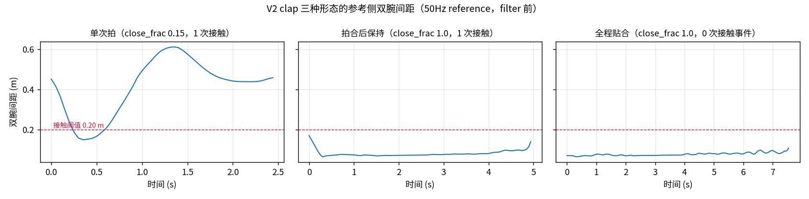

Generated from Markdown source: docs/report/2026-08-08-task067-clap-form-composition-audit.md
TASK-067 · V2 clap 池形态构成与 tracker 执行闭合审计
Date/scale:
2026-08-08 / V2 clap 全量 197 段（无抽样；执行侧 196 段有 rollout）Output profile:markdown-project-reportResults profile:dataset-verifierVerdict:PASS
TASK-067 将拍手定为 periodic 切分，但池内存在大量"双手贴合并保持"的段（下称 hold 形）， 且人工审查目击 tracker 执行会拉大手掌间距。本报告量化两件事：参考侧的形态构成与来源、 执行侧对参考拍合闭合的保持程度。
1. Conclusion
PASS——hold 形为源数据自带的判定成立；执行侧闭合不保持的目击得到量化证实。
- 形态构成：197 段 clap 中 hold 形 107 段（54.3%）、单次拍 90 段（45.7%）、重复拍 0 段 （Results 主表）；测量位置在 50Hz 参考上，处于 tracking 与 filter 之前。
- 来源判定：50Hz 参考是 release val.pkl 段的纯重采样 + retarget（历史账 S1 行：无删除、 纯变换，无任何可"引入贴合"的环节）——贴合形态在源数据中已存在。
- 执行闭合不保持，且为 D6 专属：D6 落差中位 +6.1 cm、跟合率 12.8%；同一批参考 全池换全身策略版 SONIC 交叉验证后跟合率 99.0%、零摔倒（Results 表 2）。参考侧 存在真实合掌（腕距 <10 cm）的 165 段中，SONIC 164 段在 2 cm 容差内跟合（唯一超差 0.6 mm）——闭合丢失不是机器人本体或 retarget 的通用限制。
- 未证明：逐段形态标签未经人工定稿（阈值全局固定、未标定）；腕距是掌距的保守下界 （Obs-1：掌间距比腕距反映更直接）；交叉验证限于本池仿真评测，不自动外推真机。
2. Problem and terminology
研究问题：V2 clap 池按动作形态的构成是什么；"双手贴合保持"的段是否源数据自带；参考里的 拍合闭合经 tracker 执行后是否保持？
| Term | Operational definition in this report | Scope / not to confuse with |
|---|---|---|
| V2 clap 池 | VADCompose_Released_Cleaned_V2 中 action_parent=clap 的全部 197 段 | 不含 gate 后的 V3 子集；含 1 段无执行 rollout 的段 |
| 50Hz 参考 | release val.pkl 段经纯重采样 + retarget 得到的运动学轨迹（filter 前） | 非执行 rollout；形态属性由源数据继承 |
| 接触事件 | 双腕（wrist_yaw）间距的局部谷，突出度 >3 cm 且谷值 <0.20 m | 计数器，未经人工标定 |
| close_frac | 双腕间距 <0.20 m 的帧占比（0–1） | 段级占比，非时长秒数 |
| hold 形 | close_frac ≥ 0.5 的段；细分为拍合后保持（≥1 次接触事件）与全程贴合（0 次） | 判定只看参考侧，与执行质量无关 |
| 单次拍 | 接触事件 =1 且 close_frac <0.5；轨迹呈 分开→拍合→分开 一次完整往返 | periodic 口径下即单周期单元 |
| 现行 gate | V3 建库用的执行/参考比值门（jerk/accel/运动量/相位滞后） | 本报告仅作交叉信号，不作判据 |
| closure_gap | 执行最小腕距 − 参考最小腕距（m），同一帧轴、同一 FK | 正值 = 执行没合到参考的程度；腕距为掌距的保守下界 |
| 跟合 | closure_gap ≤ 0.02 m（执行在 2 cm 容差内达到参考闭合深度） | 阈值为本次测量声明，非预注册 |
| D6 GTrXL | V3 建库中执行 clap 的 tracker（执行器） | 本报告不区分其内部原因，只测输出 |
| SONIC（全身策略版） | 冻结 GEAR-SONIC ONNX + MuJoCo 闭环仿真，29 关节全由策略控制（scripts/crosstracker/run_sonic.py 协议） |
勿与 V3 生产管线的手臂直通版 SONIC 混淆——后者手臂开环回放参考角度，"合掌"不反映跟踪能力 |
| 谷底口径 | gap_at_valley = 执行腕距(t*) − 参考腕距(t*)，t* = 参考腕距最小的时刻 | 时间对齐、比 min-vs-min 更严格；两种口径均落盘 |
3. Method
| Item | Setup |
|---|---|
| Task/data | V2 clap 全量 197 段的 50Hz 参考 npz；执行侧 D6 rollout 196 段 + SONIC 全池仿真 197 段 |
| Signal（形态） | 参考双腕 wrist_yaw 间距时间序列（body 轴 23/30） |
| Signal（闭合） | 三方同一帧轴、同一 scene FK 的 wrist_yaw 双腕最小间距（整段区间） |
| SONIC 交叉验证 | 全身策略版整段仿真（帧 0 对齐、无垫片），每条约 1.7 s，197 条共 5.5 分钟，CPU |
| Evaluation | 全量逐段，无抽样；阈值全局固定（0.20 m / 3 cm / close_frac 0.5 / 跟合容差 2 cm） |
| Evidence profile | dataset-verifier |
| Criterion | Threshold | Measured | Verdict |
|---|---|---|---|
| hold 形存在于参考侧（filter/tracking 之前） | 存在性 | 107/197（54.3%） | PASS |
| 处理链在参考之前无形态引入环节 | S1 记录为纯变换 | 历史账 S1 行核对通过 | PASS |
| D6 保持参考的拍合闭合 | 跟合率（closure_gap ≤ 2 cm） | 25/196（12.8%） | FAIL |
| SONIC 保持参考的拍合闭合（交叉验证） | 同上 | 195/197（99.0%） | PASS |
| 参考真实合掌段（腕距 <10 cm）SONIC 跟合 | 同上 | 164/165（唯一超差 +0.6 mm） | PASS |
| 逐段形态标签经人工定稿 | 全量过目 | 前端 8772 已备，待过目 | PENDING |
Differences and Run Spec
Differences from prior setup
- 本报告为 TASK-067 Step 1 期间的数据审计，无先行同类报告。
Run Spec
NOT PREREGISTERED — no confirmed Run Spec found after searching: docs/plans/、
outputs/task067_prep/（TASK-067 状态为 proposed，尚无确认版执行 spec）。
Observed setup 以探针生成时声明的 spec 为准，原文嵌于
outputs/task067_prep/clap_forms_probe.json 的 spec 字段。
4. Results
| 形态 | n | 占比 ↑ | gate 保留 | gate 删除 | close_frac 中位 | 接触事件中位 |
|---|---|---|---|---|---|---|
| hold 形（合计） | 107 | 54.3% | 73 | 34 | 0.945 | 1 |
| — 拍合后保持 | 83 | 42.1% | — | — | — | ≥1 |
| — 全程贴合 | 24 | 12.2% | — | — | — | 0 |
| 单次拍 | 90 | 45.7% | 75 | 15 | 0.306 | 1 |
| 重复拍 | 0 | 0% | — | — | — | — |
| 无接触 | 0 | 0% | — | — | — | — |
采样口径：全量 197 段，段级计数，无聚合层级。gate 两列合计 197：其中 1 段无执行 rollout， 在建库判定中按数据错误类计入删除。

代表段视频（左 = 参考 filter 前，右 = 执行 filter 后；逐段元数据见 Appendix）：
单次拍——完整的 分开→拍合→分开 往返：
拍合后保持——开场拍合后双手贴合至段尾：
全程贴合——双手全段贴合，无接触事件：
执行侧闭合（全池三方同口径：wrist_yaw、同一 FK、整段区间；D6 196 段、SONIC 197 段）：
| 指标 | 参考 | D6 GTrXL | SONIC（全身策略版） |
|---|---|---|---|
| 最小腕距 中位 ↓ | 7.1 cm | 14.2 cm | 7.1 cm |
| closure_gap 中位 ↓ | — | +6.1 cm | +0.04 cm |
| 跟合率（≤2 cm）↑ | — | 12.8%（25/196） | 99.0%（195/197） |
| 摔倒 | — | （不在本口径） | 0/197 |
- 参考真实合掌（腕距 <10 cm）的 165 段：SONIC 跟合 164/165（唯一超差 +0.6 mm）， 最严格的谷底口径下最差 +2.4 cm。
- 例外方向也查过：D6 比 SONIC 更贴参考的仅 8/196 段，全部是参考自身不闭合 （腕距 ≥13.9 cm）的单次拍，优势中位 0.5 cm——与 SONIC 在其余段的优势中位 7.4 cm 不在一个量级（明细见 Appendix）。
展品段（hold 形，gate 保留；参考合到 8.7 cm，D6 只到约 21 cm，SONIC 贴合参考—— 三格同一时间轴）：
全池 196 条三联视频与按筛选榜单分组的审查前端见 Appendix；发布版画廊（10 条同步三联 +
最紧帧网格）在 openresults 的 d6-vs-sonic-triplets 子页。
5. Analysis（draft，待数据负责人定稿）
- Finding（形态）：池内 clap 只有两种形态——单次拍与 hold 形，重复拍为 0（Results 主表）；单次拍的轨迹呈一次完整往返（Results 图左板）。hold 形贴合即腕距行程小，与此前 测得的现行 gate 小幅度隐式偏删相符（hold 形删除率约为单次拍 2 倍，未做单因素隔离）。
- Finding（闭合归因）：D6 普遍未跟上参考拍合深度（跟合 12.8%，保留集 11.5% 低于 被删集 16.7%——现行 gate 从未测过闭合）；同一批参考换 SONIC 后 99.0% 跟合、零摔倒 ——闭合丢失是 D6 策略专属，不是机器人本体、retarget 或动作类的通用限制。 由此成立的陈述："参考有合掌的段，SONIC 都能合到参考深度 +2.1 cm 以内"（165 段 无实质例外；边界条件 = 腕距口径 + 全身策略版 + 本池仿真域）。
- Unknown：0.20 m / close_frac 0.5 / 跟合容差 2 cm 三个阈值未经人工标定；腕距为掌距 保守下界，掌心距离量化待掌部偏移标定（待验证）；真机与其他动作池未测。
- Next：数据负责人在前端 8772 按形态分组全量过目、定稿逐段标签并目检闭合（同时覆盖 任务书 Step 5 的拍手全量审查）。
6. Appendix
Terms, calculations, evidence, and reproduction
Worked examples
hold 形占比 = 107 / 197 = 54.3%
hold 形 gate 删除率 = 34 / 107 = 31.8%
单次拍 gate 删除率 = 15 / 90 = 16.7%
D6 跟合率 = 25 / 196 = 12.8%
SONIC 跟合率 = 195 / 197 = 99.0%
参考合掌段 SONIC 跟合 = 164 / 165 = 99.4%（唯一超差 0.0206 − 0.02 = 0.6 mm）
执行闭合分组明细（全池三方口径，gap 中位 / 跟合率）
| 分组 | n | D6 | SONIC |
|---|---|---|---|
| hold 形 | 106/107 | +7.0 cm / 5.7% | −0.1 cm / 99.1% |
| 单次拍 | 90 | +4.8 cm / 21.1% | +0.5 cm / 98.9% |
| gate 保留 | 148 | +6.2 cm / 11.5% | +0.03 cm / 99.3% |
| gate 删除 | 48/49 | +4.8 cm / 16.7% | +0.06 cm / 98.0% |
D6 优于 SONIC 的例外（8/196，谷底口径）
全部为参考自身不闭合的单次拍（ref_min 13.9–15.3 cm）：00585、00363、00064、00963、 00881、00171、00222、00101；D6 优势中位 0.5 cm、最大 2.8 cm。
口径备注（两把闭合尺的差异）
首版闭合数字（14.3% = 28/196）取自 D6 rollout 内记录的 KP14 腕位置（clap_forms_probe
.json 的 exec_closure 节）；全池交叉验证改用三方统一的 qpos→FK wrist_yaw 口径
（12.8% = 25/196）。两把尺相差 1.5 个百分点，方向与结论不受影响；正文统一采用后者。
Evidence and commands
- 形态 evidence：
outputs/task067_prep/clap_forms_probe.json（逐段 events / close_frac / 形态 / gate 判定全量在册；spec 内嵌；含首版 KP14 口径的exec_closure节） - 全池闭合 evidence：
outputs/task067_prep/clap_fullpool_closure.json（三方 FK 口径）； 极端样本排名outputs/task067_prep/clap_closure_extremes.json（含谷底口径） - SONIC 全池 rollout：
outputs/task067_prep/sonic_clap_fullpool/（197 npz + run_log.json，仿真 spec 内嵌） - 图 provenance：
outputs/task067_prep/clap_forms_traces.json；视频池 provenance：clap_wave_review_manifest.json（pair）与clap_fullpool_triplet_videos/provenance.json（三联） - 前端：8772 = 形态分组（判定库
review_clap_forms.sqlite3）；8773 = 全池三联 + 筛选榜单分组（判定库clap_fullpool_triplet_videos/review.sqlite3） - Commands：
uv run python scripts/probe_task067_clap_forms.py；SONIC_DEPLOY=… uv run python scripts/run_sonic_clap_fullpool.py；uv run python scripts/probe_task067_clap_fullpool_closure.py；uv run python scripts/rank_task067_clap_closure_extremes.py - 历史账（S1 纯变换记录）：
outputs/task067_prep/step1_history_ledger.md
代表段元数据
| 段 | 形态 | close_frac | 接触事件 | gate |
|---|---|---|---|---|
| 00083_clap_val_377_2_245_295 | 单次拍 | 0.146 | 1 | 保留 |
| 00165_clap_val_1295_1_534_634 | 拍合后保持 | 1.0 | 1 | 保留 |
| 00174_clap_val_1309_0_0_152 | 全程贴合 | 1.0 | 0 | 删除（jerk,accel,motion_preservation） |
| 00535_clap_val_197_1_30_118 | hold 形（闭合展品） | 1.0（参考侧） | — | 保留；ref_min 0.087 / exec_min 0.217 |
Terms and prior reports
- 小幅度隐式偏删的测量：
outputs/task067_prep/amp_bias_probe.json与outputs/task067_prep/observations.md（Obs-2 / M-3 / M-4）。 - 历史筛选合规审计：
outputs/task067_prep/step1_report.md。